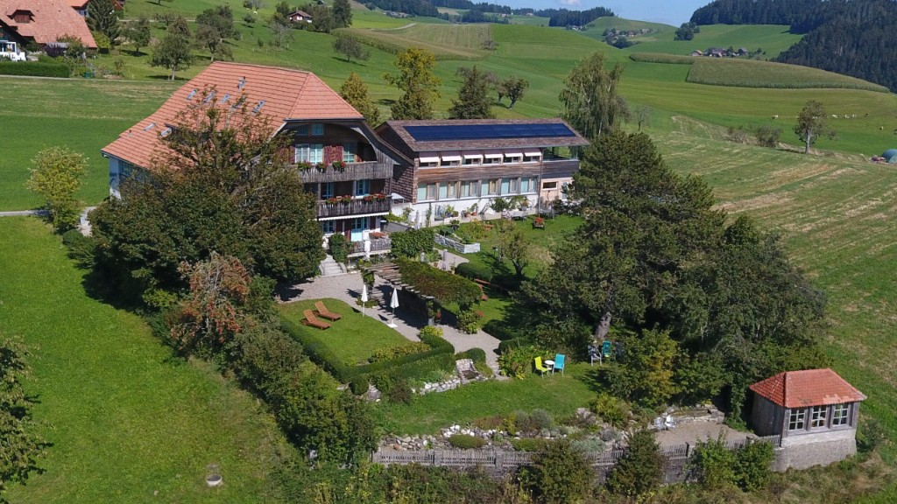

DdS Autumn School 2026 — Call for Proposals
After seven successful schools across four continents, we are now planning the DdS Autumn School 2026 in Switzerland. For this edition, we are opening topic selection to the community and inviting instructors to propose a 5-day session that expands the current state of LCA-based open-source sustainability assessment.
General Info
- Duration: 5.5 days (Oct–Nov 2026, Sunday lunch to Friday evening, dates based on instructor and facility availability).
- Location: In-person, Hotel Moeschberg, Grosshöchstetten, Switzerland.
- Format: Hands-on and technical. We expect interactive sessions with practical exercises and shared code/materials (e.g., Jupyter Notebooks).
- Audience: ~20–30 participants (PhD students, postdocs, and advanced practitioners).
- Staffing: Ideally 3 instructors, supported by 0–3 coaches/TAs. You don't need to organize the whole team, we will help.
- Honorarium: Provided for course instructors.
Proposal Requirements
If you have a theme in mind, please send us a short proposal (PDF or Markdown) including:
- Title & Topic: What specific area of LCA/MFA methodology or tooling will you cover?
- Why it matters: Why does this topic matter from a technical or scientific perspective?
- Learning Objectives: What specific skills or knowledge will students walk away with?
- Instructors: Names, affiliations, and brief bios/profiles.
Please send proposals or any questions to events@d-d-s.ch. We're looking forward to seeing what the community proposes. If your proposal gets accepted, we will work with you to develop an interesting program together with you.